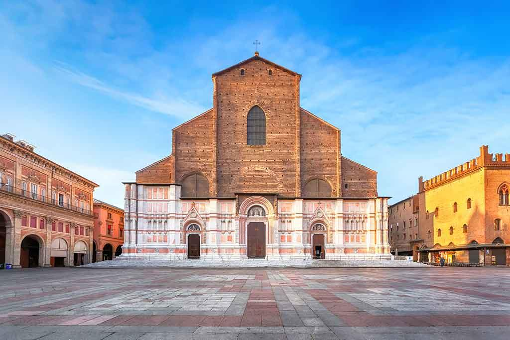
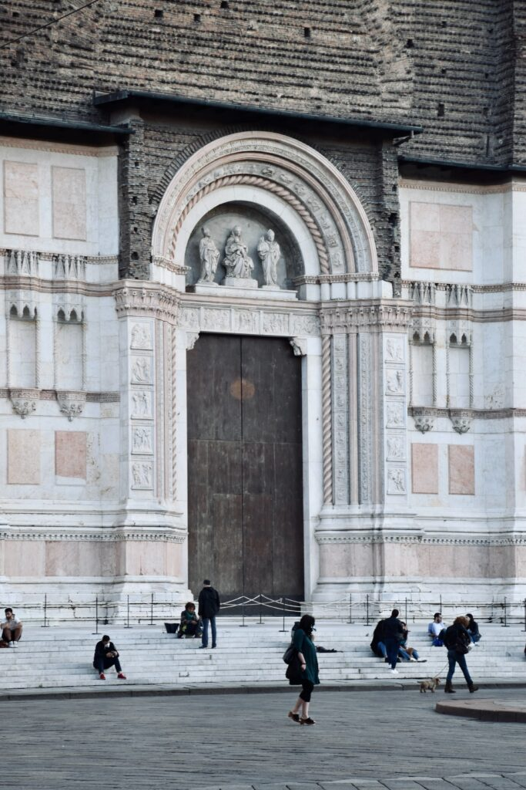
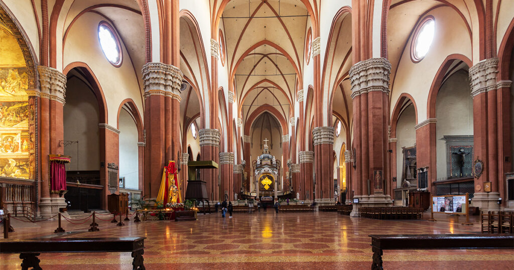
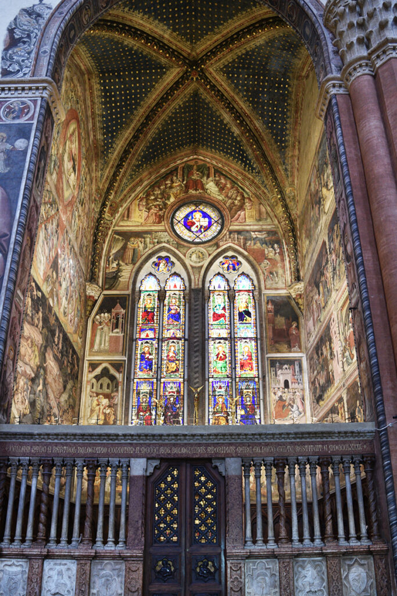
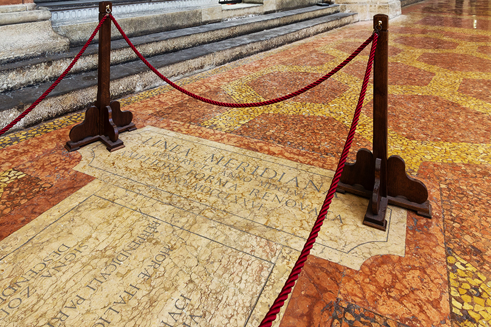
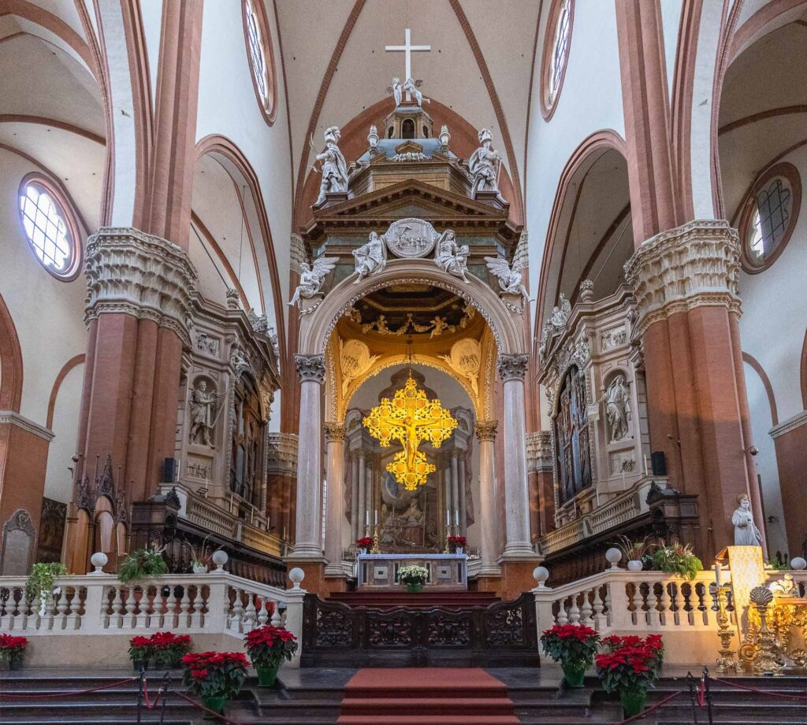
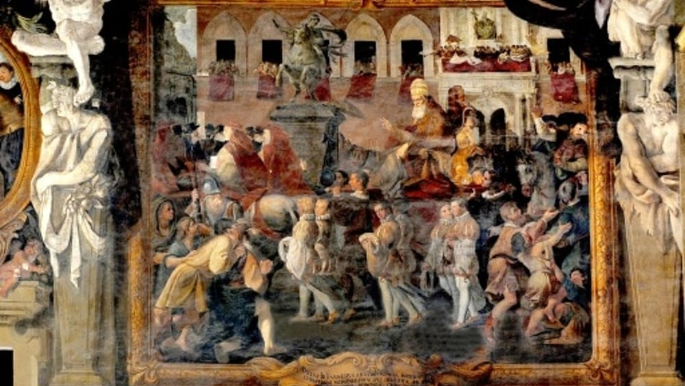

A Journey Through History, Culture & Innovation
Do you want to know the Basilica of San Petronio? You are in the right place! Here you can find all you have to know of the Basilica: we will explain you who San Petronio was, where is the Basilica, how to recognise it, its date of construction and much more!
The Basilica of San Petronio is collocated between the end of St. Ugo Bassi and the beginning of St. Rizzoli in the enormous Piazza Maggiore. It is near various artistic monuments that characterise Bologna, such as the Fountain of Nettuno, the splendid Palazzo Re Enzo, the modern Salaborsa Library, that once was the Botanical Garden of the city!

Source: visititaly
Thanks to its facade of 51 meters of height and 60 meters of width, the Basilica has a dichromatism due to the different styles of decoration used. In fact, the upper section is in tuscan-florentine style, characterised by the dark brown coloration, and the lower section is an esemlification of the white marble gothic style.
At the base of the Basilica we can find the greater gate, unfinished due to the lack of the pinnacle, decorated with tiles that represents the History of Genesis, a work by Jacopo della Quercia. Instead, on the sides of the main door, we notice two gates of smaller size drawn by Ercole Seccadenari, that represent biblical scenes of the Old and New Testament.

Source: unsplash
The Basilica of San Petronio is in the heart of the city. But Bologna’s sotry is interesting also for famous toweers which are Garisenda e degli Asinelli.Discover more about the towers. Check our article One of the most representative symbols of the city of Bologna are the Two Towers: Asinelli and Garisenda. Discover with us the legends and curiosities about them.
San Petronio was a prominent figure in the catholic church of the 5th century in Bologna. He was bishop of Bologna for eighteen years, from 431 to 449 A.C.
When we talk about San Petronio, we cannot not consider the testimonies of Eucherio di Lione and Gennadio di Marsiglia. The two were respectively a bishop and a priest that, through their letters and descriptions, allow us to make some biographical considerations about San Petronio. They explain that San Petronio came from an upper class family. During his adolescence, he decided to separate from this important position and begin his monastic studies. Among time, these lead him to the episcopal dignity, also thanks to the milanese contact with Sant’Ambrogio.
Later, in the 3rd century, the district of Bologna decided to promote San Petronio to patron of the city, replacing San Pietro, who personified the papal values and powers. In the classic iconography, he is represented like an tall, old and erudite man, dressed with the classic cassock suit. Other times he is presented with the city of Bologna in his hands. San Petronio is also remembered for inventing the “Saint Gerusalem” of Bologna.
The beginning of the construction of the Basilica of San Petronio is dated back to 1390, oerseen by the architect Antonio di Vincenzo. However, we must not forget that, if it wasn’t for the population, probably the church would never be built. In fact, professionists, merchants and artisan burgeois were conquering more and more political recognisation, and so, thanks to the Council of the 7th century, they relaunched the cult f San Petronio.
Not only the basilica: during the 4th century in Bologna rose up numerous buildings between the walls of the city, such as the Basilica of Santa Maria dei Servi, the Loggia della Mercanzia and the Palazzo dei Notai (“Palace of Notaries”). These buildings were used to confer prestige to the city, which was often in competition with Florence and Milan. With the construction of the Basilica of San Petronio, Bologna surpassed these two cities not only for the work but especially because this big Basilica was not built for ecclesiastical will, but rather for civic will.
As soon as you enter into the Basilica, you are attracted by the majesty of the central nave. In the sixth span, there are the greater altar and the ciborium of Vignola. Together with the minor naves, located at the sides, a contrast is created between brick-red and white marble, which donates an soared upward to the structure.
Source: Basilica di San Petronio
Inside the left and right naves, we can notice different chapels, precisely eleven for each side. Starting from the right there are: Relics’ Chapel, the one of S. Pietro Martyr, the one of S. Antonio, the one of the Holy, the one of the Immculate, the one of S. Girolamo, the one of S. Lorenzo, the one of the Holy Cross, the one of S. Ambrogio, the one of S. Brigida and the one of the Madonna of Peace.
On the left, instead, there are S. Bernardino’s Chapel, the one of S. Barbara, the one of S. Michele, the one of S. Rocco, the one of S. Giacomo, the one of S. Vincenzo Ferrer, the one of S. Sebastian, the one of the Three Wise Men, the one of S. Ivo’, the one of S. Petronio and the one of S. Abbondio.
We want to point out the Bolognini Chapel, one of the most important: it has frescoes that are attributable to the bolognese artist Jacopo di Paolo. He made works like the Nativity of Christ, the departure of the Three Wise Men, but he is famous for his raffigurations of Paradise and Hell.
Source: Basilica di San Petronio
Paradise is characterised by God in the middle, and under him there is Jesus who crowns the Virgin Mary, surrounded by Seraphims, Cherubim, Angels and Archangels. Hell has in the middle the representation of Lucifer, a two-headed monster, that gulps down and throws up a sinner who represents Giuda the apostle. Around them, there are torture scenes like the one of prophet Maometto. He is taered apart and crumbled from a devil, and this alludes to the retaliation law of Dante, to the schism and to the divisions that were created inside the religious community during centuries.
Did you know that in the Asinelli tower there is one of the Seven Secrets of the city? To discover more, go check our article A Journey Through the Seven Secrets of Bologna.
In its history, the Basilica of San Petronio has had two sundials: one dates back to 1575 and the other to 1657.
The first was created by the mathematician and astronomer teacher Egnazio Danti. He was a dominican monk who was in the commission made by pope Gregorio XIII, born as Ugo Boncompagni, who constructed the Gregorian calendar. The sundial had the purpose of marking the variation of the apparent movement of the sun and of defining the movements of the solstice and the equinox during the whole year. This first construction was destroyed by an upgrade of the church in 1653. Then, it was substituted with another more sophisticated sundial made by the astronomer Giovanni Domenico Cassini.
Among the primates of Bologna, there is not just the sundial, but there is also the longest portico in the world. What are you waiting for? Come discover the whole story of the Basilica of the Madonna of San Luca, with its 666 arches, already part of the Unesco World Heritage.
This figure was an italian matematician, astronomer, engineer, doctor and biologist, to hich was dedicated the mission of the spacecraft Cassini, which explored Saturn and Titan. Also, the the astronomical observatory of the University of Bologna is in his honor, and it is located in Loiano. The University of Bologna has many buildings among the whole city, between old and new palaces: discover the story of the Complex of San Giovanni in Monte, the actual headquarter of the department of History, and Cultures
He put a gnomic forum on the top of one nave, at the height of 27 metres. Since it had a smaller diameter than the one of the sun, it projected the image of an upside-down sun, like in a darkroom.
Now, it is still possible to admire this process, if you enter the Basilica a few minutes before midday. At this hour, the sunlight enters from the gnomic forum, and, minute after minute, you will see it getting closer to the line of the sundial, up to when it reaches the center. When the light will reach this position, it will be precisely midday, and the sun will be exactly over your head.
Source: Basilica di San Petronio
People usually generalize these three words by using the term church, but it is not completly correct. Let’s see what they mean.
The Basilica represents the house of the king, of the Lord. Its etymology derives from the greek basileus, that means ‘king’ and from oikos that means ‘house’. Historically the Basilica was used by the Romans as a public building where to manage justice, trade and meetings. However, not all the churches can be considered Basilicas. Which is the difference? It just comes from the artistic and historic value that the Basilica has and has to keep during time.
The Dome from the latin domus, that means ‘house’, implied of God. The Dome identifies the most important church of the city. When a city with epicospal base has a Dome, it takes the name Cathedral, that is the most important church of the diocese. It is named as it because the bishop has his desk or throne inside: in Italian it is called cattedra. So, the main difference between Dome, Cathedral and Basilica consist primarly on its importance. Not only, the buildings have a different architecture , that in some cases is unlike the one of the buildings of the same period.
Source: Basilica di San Petronio
The Basilica of San Petronio was the location of important institutional events, beyond being a meeting place for the faithful.
In fact, in 1530 the city became the theatre of the world. The bolognese people brought out their abilities of handcraft and art to celebrate two figures that would write a page of history. These two characters, that stayed at Palazzo d’Accursio, were Carlo V e Pope Clemente VII, borned Giulio Zanobi di Giuliano de’ Medici.
The event concerned the coronation of Carlo V to be emperor of the Holy Roman Empire. It was the Pope who greed to do the cerimony, in order to guarantee a universal peace with the emperor, that would bring to secure defenses for Europe from the turkish invasions. The coronation occurred the 24th February: on Carlo V’s birthday.
For the occasion was erected a jetty which connected the rooms of Palazzo d’Accursio with the ones of the Basilica of San Petronio. Here, the emperor, kneeled in front of the Pope and after pronouncing the ritual formulas, was crowned emperor.
Source: BolognaToday
The Basilica is open everyday from 8.30 a.m. to 1 p.m. and from 3 to 6 p.m.
The ticket costs 5 euros per person. While the reduced price is 3 euros, and it is available for:
Children under 10 years old and religious people enter for free.
For further information check the website of the Basilica of San Petronio.
Source: Bologna-Experience
Our user-friendly interface allows you to seamlessly navigate between articles and visualize their locations on an interactive map, while our commitment to editorial excellence ensures that every piece is engaging, informative, and accurate. The Discovering Bologna team has meticulously crafted every typographic detail, from font families and sizes to colors, margins, aspect ratios, and captivating images with captivating captions, to truly reflect the graphic theme and ambiance of this captivating city.
Join us on this digital adventure and explore the wonders of Bologna like never before, all from the comfort of your own home. Discovering Bologna: Unraveling the secrets of the city, one story at a time.